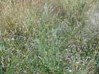
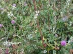
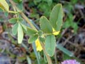
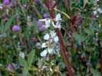
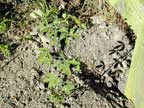

Sweet clover
Melilotus alba
Other names
white melilot, Bokhara clover
Description
A tall (up to 2m) annual to biennial herb with erect stems and trefoil leaf. Flowers are white in stalked spikes. The fruit is a hairless pod that is brown when ripe about 3 5 mm long.
Similar plants
Yellow sweet clover, King Island melilot; Tagasaste (grown as fodder tree) seedlings could be confused with young sweet clover plants.
Distribution
Found on both islands with prevalence in Hawkes Bay, Wellington, Canterbury and Central Otago. Generally do not compete well with pasture species so are not likely to end up in hay. Grown as a crop in USA.
Toxin
Coumarin, which is converted by moulds in hay or silage to dicoumarol, an anticoagulant from which warfarin was developed.
Species affected
Reported in grazing livestock, especially cattle but has also been reported in sheep, pigs and horses. Poisoning is unlikely in NZ, as the plant is not grown as a crop, and fairly large quantities are required for toxicity.
Clinical signs acute
Swellings caused by subcutaneous haemorrhage, bleeding from nose, vulva or small cuts. Shock from internal bleeding.
Clinical signs chronic
Post mortem signs
Haemorrhages as with anticoagulant poisoning.
Diagnosis
History of exposure to the plant and associated clinical signs and postmortem haemorrhages.
Differential diagnosis
Anticoagulant poisoning (much more likely in NZ).
Treatment
Vitamin K1, withdraw source of plant, symptomatic care. Lucerne hay naturally contains Vitamin K.
Prognosis
Depends on severity of anticoagulopathy.
Prevention
References
Conner H.E. The Poisonous Plants In New Zealand. 1992. GP Publications Ltd, Wellington
Cooper M R, Johnson A W. Poisonous Plants and Fungi in Britan: Animals and Human Poisoning. Her Majesty’s Stationary Office. London. 1998
Parton K, Bruere A.N. and Chambers J.P. Veterinary Clinical Toxicology, 2nd ed. 2001. Veterinary Continuing Education Publication No. 208
|  plant |
 |
|
|
 |
 |
|
|
|
||
|
 |
|
|